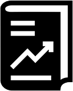

The Final Countdown
Log in
here.
| ☰ SIGN IN |  |
Timer | × |
Add your tasks here. | × |
Kanban | × |
test description
test description
test description
test description
test description
test description
test description
test description
test description
Report | × |
Pomodoro Technique | × |
|
The Pomodoro Technique is a time management method based on 25-minute stretches of focused work broken by five-minute breaks. Longer breaks, typically 15 to 30 minutes, are taken after four consecutive work intervals. Each work interval is called a pomodoro, the Italian word for tomato (plural: pomodori). Developer and entrepreneur Francesco Cirillo created the Pomodoro Technique in the late 1980s, when he was a university student and used a tomato-shaped kitchen timer to organize his study schedule. At first, he experimented with different work intervals, starting with two minutes and extending them up to one hour; he quickly realized that these were getting too long to stay focused on a task. He settled on 25-minute pomodori as the optimal time for his needs. From this experience, Cirillo recognized that time could be turned into an ally, rather than a source of anxiety. The Pomodoro Technique essentially trains people to focus on tasks better by limiting the length of time they attempt to maintain that focus and ensuring restorative breaks from the effort. The method also helps them overcome their tendencies to procrastinate or multitask, both of which are known to impair productivity. |